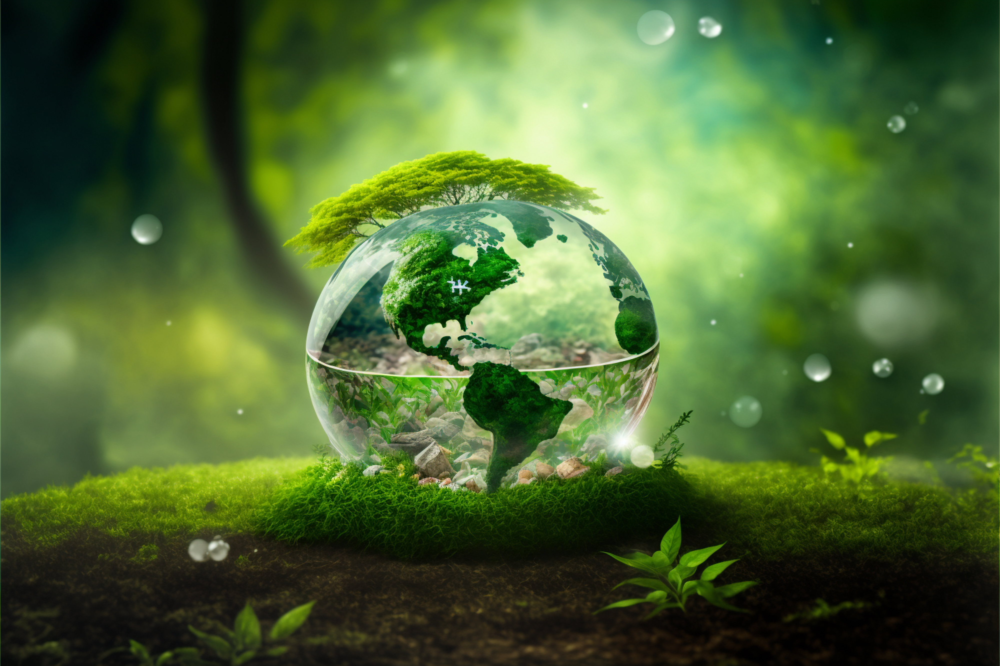

Give Love for Saving
World Wild Animals.
Welcome to our website, a sanctuary of hope and compassion dedicated to the noble cause of animal conservation. As an organization committed to saving and protecting animals, we believe in the power of collective action to make a difference. With unwavering resolve, we strive to safeguard the incredible diversity of our planet's wildlife, ensuring their survival and thriving for generations to come. Together, we stand as guardians, working tirelessly to rescue, rehabilitate, and provide a safe haven for vulnerable creatures. Through our unwavering commitment to education, advocacy, and community engagement, we aim to inspire hearts and ignite a passion for the protection of animals. Join us on this extraordinary journey, where every small act of kindness and every effort towards raising awareness can create a ripple effect of transformative change. Together, let us become the voice for those who cannot speak, the protectors of those in need, and the champions of a future where humans and animals coexist in harmony and reverence for the natural world.
Step into our wildlife sanctuary, a hub of knowledge and inspiration for those passionate about saving animals and protecting endangered species. Our platform serves as a virtual sanctuary, bringing together individuals from all walks of life who share a common goal: to preserve the precious biodiversity that our planet possesses. Within our digital realm, you will find a treasure trove of information and resources that shed light on the urgent challenges faced by countless species. Through engaging articles, captivating photographs, and eye-opening videos, we aim to ignite a flame of curiosity and empathy within every visitor. We believe that education is the first step towards change. Our in-depth profiles of endangered animals provide invaluable insights into their habitats, behaviors, and the threats they confront. By unraveling their stories and painting a vivid picture of their struggles, we hope to foster a deep connection between humans and the natural world. But we don't stop at awareness alone. We strive to empower our visitors with practical tools and actionable steps they can take to make a tangible difference. From supporting local conservation organizations to advocating for stronger environmental policies, we provide a roadmap for collective action. Together, we can create a groundswell of change that reverberates across borders, helping to safeguard the most vulnerable inhabitants of our planet. Our platform also serves as a community, a space where like-minded individuals can come together to share their experiences, insights, and successes. Through our forums, social media channels, and collaborative projects, we foster a sense of unity and empower individuals to become ambassadors for wildlife conservation in their own communities. Saving animals and protecting endangered species is not a task reserved for a select few; it is a responsibility that falls upon each and every one of us. By raising our voices, amplifying the call for action, and embracing sustainable practices in our daily lives, we can pave the way for a brighter future for all living creatures. Join us on this incredible journey of discovery, empathy, and action. Together, we can turn the tide and ensure that future generations inherit a world teeming with diverse wildlife, where the symphony of nature plays on for eternity. Let us embark on this transformative adventure, hand in hand, as stewards of the Earth and champions for the voiceless.
We Work Differently to Keep The World Safe.

Save Nature
Amidst the tapestry of life, animals hold an irreplaceable role, enriching our planet with their diversity, grace, and intrinsic value. From the majestic elephants roaming the savannahs to the playful dolphins dancing through the waves, every creature contributes to the intricate web of life. As stewards of this planet, it is our duty to champion the cause of animal conservation and safeguard their habitats. By advocating for responsible practices, supporting wildlife sanctuaries, and embracing sustainable coexistence, we can protect the precious biodiversity that intertwines with our own existence. Let us raise our voices in unison, nurturing a world where animals can thrive, where their future is secured, and where the symphony of their existence resonates for generations to come. Together, we can ensure that the grandeur of Earth's fauna continues to captivate and inspire, reminding us of the profound interconnectedness of all living beings.
Clean Ocean
The vast expanse of our oceans, with their deep blue hues and mysterious depths, cradle a world of astounding wonder and extraordinary life. Within these pristine waters, a symphony of marine creatures dances in harmony, from the gentle giants of the sea, like whales and majestic sea turtles, to the vibrant coral reefs teeming with a kaleidoscope of colorful fish. It is our moral imperative to safeguard the purity of our oceans, to protect the fragile ecosystems that provide a nurturing haven for these magnificent beings. By embracing sustainable practices, reducing pollution, and championing responsible fishing, we can ensure the survival and flourishing of these vital marine species. Let us join hands, raising awareness and taking action to restore the health of our oceans, for they are not only the lifeblood of our planet but also the legacy we leave for future generations. Together, we can forge a future where the beauty and vitality of the oceans continue to inspire and amaze, ensuring that the marine wonders that grace our planet endure for eternity.
Tree Plantation
In the delicate balance of nature, trees stand as majestic sentinels, their leafy branches reaching towards the heavens, offering shelter, sustenance, and a sanctuary for countless creatures. Each tree holds the power to transform barren landscapes into thriving habitats, providing a home for birds, squirrels, insects, and an array of magnificent wildlife. When we embrace the noble act of tree plantation, we weave a tapestry of life, rejuvenating our environment and nurturing the intricate web of interdependence between flora and fauna. As we plant saplings, we sow the seeds of hope, creating a refuge for animals to flourish, find nourishment, and seek solace amidst the bustling branches. Let us raise our shovels with purpose, understanding that every tree we plant serves as a living testament to our commitment to preserving biodiversity. Together, as stewards of the Earth, we can ensure that future generations inherit a world where the whispering leaves of countless trees harmonize with the rustling footsteps of thriving animal life, forging a future where humans and wildlife coexist in harmony under the benevolent shade of nature's embrace.
Save Ecology
Saving ecology goes beyond mere words; it demands action and commitment. It requires us to tread lightly on the Earth, reducing our carbon footprint, and embracing renewable energy sources. It urges us to be mindful of our consumption and waste, opting for sustainable practices that minimize harm to ecosystems. Saving ecology means actively participating in conservation efforts, supporting organizations that protect endangered species, and restoring damaged habitats. It involves educating ourselves and others about the importance of biodiversity and the consequences of our actions. By joining hands and taking tangible steps, we can make a lasting impact on the well-being of animals and the health of our planet. Together, let us be the change that saves ecology and secures a thriving future for both animals and humans alike.
Save Air
The air we breathe sustains not only our own existence but also that of the magnificent animals who grace our planet. It is in the purity of the air that their delicate lungs find solace, their wings find the strength to soar, and their voices carry across vast landscapes. To save the air is to safeguard the very essence of life itself, embracing sustainable practices that reduce pollution, advocating for clean energy sources, and preserving the precious ecosystems that filter and rejuvenate our atmosphere. As stewards of this Earth, we must recognize that the air we protect is not just for our benefit but a vital lifeline for countless creatures who call this planet home. Let us join forces, spreading awareness, and taking action to ensure that the air remains pure and life-sustaining for generations of animals yet to come.Together, we can weave a future where the breath of nature fills our lungs, where the wings of animals grace the sky, and where the symphony of life continues to thrive in harmony with the revitalizing embrace of clean and pure air.
Save Water
Water purity is of utmost importance for endangered animals, as it directly affects their survival and well-being. These vulnerable species rely on clean and uncontaminated water sources for drinking, bathing, and maintaining their health. Pollution and toxins present in water can have devastating effects on their delicate bodies, leading to diseases, reproductive issues, and even death. By protecting water purity, we provide a lifeline for endangered animals, ensuring they have access to a safe and nourishing environment. Preserving the quality of water ecosystems also helps maintain the delicate balance of aquatic life, which forms the foundation of the food chain and supports the entire ecosystem. Therefore, safeguarding water purity is not only crucial for the survival of endangered animals but also for the overall health and resilience of our planet's biodiversity.

Raise your hands to save world animal life.
Raise your hands to save the world and join us at Wild Life, our platform dedicated to preserving animals and nature. We deeply understand the intrinsic value of every living being and the interconnectedness of our planet's ecosystems. By saving animals and nature, we protect the delicate balance of our environment and ensure a sustainable future for generations to come. Saving animals and nature is crucial for several reasons. Firstly, biodiversity is essential for a thriving ecosystem. Every species, from the smallest insects to the majestic predators, plays a vital role in maintaining ecological equilibrium. By protecting and conserving their habitats, we help sustain the intricate web of life on Earth. Secondly, animals and nature provide us with numerous benefits. They contribute to the overall health of our planet by purifying the air we breathe, filtering water sources, and mitigating climate change through carbon sequestration. They offer us medicinal plants, food sources, and countless opportunities for scientific research and discovery. Furthermore, the beauty of nature and the existence of diverse animal species enrich our lives and bring us joy. From awe-inspiring landscapes to the companionship and unconditional love of animals, our well-being is intimately tied to the natural world. By preserving it, we preserve our own connection to the beauty and wonder of life. Lastly, saving animals and nature is an ethical imperative. All living creatures have the right to exist and thrive without unnecessary harm caused by human activities. By acting as stewards of the environment, we uphold our responsibility to protect and respect all forms of life on Earth. Join us at Wild Life and be a part of the global movement to save animals and nature. Together, we can make a positive impact, ensure a sustainable future, and preserve the wonders of our planet for generations to come.


What is our Oraganization's Vission ?
" Our vision is to create a world where animals are respected, protected, and cherished, and where their well-being takes center stage in our collective consciousness. We aspire to build a future where the intrinsic value of animals is universally recognized and their rights are safeguarded. In this world, compassion and empathy guide our interactions with all species, from the tiniest insects to the largest mammals.In pursuing this vision, we seek to transform the current paradigm that perpetuates the exploitation and suffering of animals. We strive for a society where their welfare is a top priority, where they are not viewed as commodities or objects for our entertainment, but rather as sentient beings deserving of dignity and respect. By actively advocating for their rights, we aim to dismantle industries that profit from their pain, such as factory farming, wildlife trafficking, and cruel forms of entertainment.To bring about this profound shift, we recognize the importance of education, legislation, and advocacy. By raising awareness about the interconnectedness of all living beings and the urgent need to protect wildlife, we aim to inspire individuals, communities, and governments to take action. Through collaboration and partnerships with like-minded organizations, we can amplify our impact and effect meaningful change on a global scale.Our commitment extends beyond the welfare of individual animals; we understand the critical role that wildlife plays in maintaining the balance and biodiversity of our planet. We are acutely aware of the pressing environmental challenges that threaten their habitats and push many species towards extinction. To address this, we strive to develop and promote sustainable practices that minimize our impact on ecosystems while allowing both humans and wildlife to thrive. By adopting responsible stewardship of our natural resources, supporting conservation efforts, and advocating for the preservation of habitats, we can create a future where the splendor and diversity of wildlife endure for generations to come.In this future world, the beauty of wildlife will be celebrated and cherished, serving as a source of inspiration and wonder. We envision a society that embraces the intrinsic value of animals, where coexistence and harmony between humans and wildlife are the norm. Our success will be measured by the well-being of animals, the preservation of their habitats, and the collective efforts we make to ensure their survival.Together, let us work tirelessly to realize this vision, mobilizing the power of compassion, empathy, and cooperation. By nurturing a world where animals are respected, protected, and cherished, we will not only secure a better future for them but also foster a more compassionate and enlightened society for ourselves."


What is our Organization's Mission ?
" Our mission is driven by a deep commitment to the conservation and welfare of animals, as we passionately advocate for their protection, rehabilitation, and the establishment of sustainable coexistence with humans. We firmly believe that by fostering a harmonious relationship between humans and animals, we can create a world where both thrive. Education stands as a cornerstone of our mission, empowering individuals and communities with knowledge about the crucial role animals play in maintaining ecological balance and the urgency of preserving biodiversity. We strive to raise awareness about the ethical treatment of animals, encouraging compassion and respect towards every living being we share this planet with. Through enlightening programs, workshops, and campaigns, we aim to instill a profound sense of empathy and responsibility towards all creatures, nurturing a collective understanding of their inherent worth. Rescue efforts form an integral part of our mission, as we actively work towards safeguarding vulnerable animals from harm. By collaborating with rescue organizations, sanctuaries, and dedicated individuals, we provide vital care, rehabilitation, and support to animals in need. Our aim is not only to rescue and rehabilitate, but also to inspire communities to actively participate in the protection and well-being of animals, ensuring their survival for future generations. Community engagement is paramount in achieving our mission. We actively seek to foster partnerships and collaborations with local communities, governments, and stakeholders to create a network of compassion and shared responsibility. By working together, we can develop and implement sustainable practices that promote the coexistence of humans and animals, minimizing conflicts and creating spaces where both can thrive. At the heart of our mission lies the recognition that animals are sentient beings deserving of dignity and respect. We are dedicated to upholding their inherent rights and advocating for legal protections that prevent cruelty and exploitation. Through lobbying, grassroots activism, and policy initiatives, we strive to create a legal framework that ensures animals are treated with kindness and are free from unnecessary suffering. Ultimately, our mission is to create a future where animals are valued, their habitats are preserved, and their inherent rights are upheld. By embracing a holistic approach that combines education, rescue efforts, community engagement, and advocacy, we envision a world where humans and animals coexist in harmony. Together, we can build a more compassionate and sustainable future, where the well-being of all living beings is cherished and protected."


What People Say About
Our Organization ?
Animal and nature conservation organizations are at the forefront of the battle to protect our planet's vulnerable wildlife and ecosystems. These dedicated organizations work tirelessly to combat issues such as habitat loss, poaching, pollution, and climate change. Through their unwavering commitment, they strive to ensure the survival and well-being of countless animal species and the preservation of our natural landscapes. By supporting these organizations, we contribute to a collective effort to save and restore animal populations, conserve endangered species, and promote sustainable practices. Their initiatives encompass a wide range of activities, including habitat restoration, wildlife rehabilitation, community education, and advocacy for stronger environmental policies. They also collaborate with local communities and governments to foster a harmonious relationship between humans and nature. Moreover, these organizations serve as a crucial voice for the voiceless, raising awareness about the urgent need for conservation and the importance of ethical treatment of animals. They inspire individuals to make conscious choices in their daily lives, such as adopting sustainable practices, reducing waste, and supporting wildlife-friendly initiatives. The impact of animal and nature conservation organizations extends far beyond the immediate preservation of individual species. By protecting habitats, they help maintain the delicate balance of ecosystems, benefiting not only wildlife but also human communities that depend on these ecosystems for their livelihoods and well-being. Additionally, their efforts contribute to mitigating climate change, as healthy ecosystems play a vital role in carbon sequestration and maintaining ecological resilience. In a world facing unprecedented environmental challenges, the work of these organizations is more critical than ever. They provide hope and demonstrate that positive change is possible through collective action and a shared commitment to safeguarding our natural world. By supporting and partnering with these organizations, we become catalysts for change, contributing to a sustainable future where both animals and nature thrive. Together, we can make a difference in the ongoing fight to protect our planet's invaluable biodiversity and ensure a harmonious coexistence between humans and the natural world.


Our Projects.
Certainly! Here are some projects that our organization do anunually or monthly programs. each project should align with the organization's mission, available resources, and the specific needs of the animals in the region. It's also essential to consider local regulations and obtain necessary permits or licenses for relevant activities.
- Wildlife Rehabilitation Center
- Community Education Programs
- Spay/Neuter Campaigns
- Habitat Restoration
- Anti-Poaching Initiatives
- Animal Rescue
- Animal Adoption
- Advocacy and Lobbying
- Educational Programs
- Wildlife Surveys and Research
- Volunteer Programs
- Collaborations and Partnerships
- Animals Rescue Progrrams


you can join with our projects and make happy to your life.
Join With Us
Gallery.
Welcome to our wild animal website's captivating photo gallery! Here, you will embark on a thrilling visual adventure into the world of untamed creatures. Our carefully curated collection showcases the majestic beauty, diversity, and wonder of wildlife from around the globe. From fierce predators prowling their territories to delicate creatures camouflaged in their natural habitats, our gallery offers a glimpse into the fascinating lives of wild animals. Through the lens of talented wildlife photographers, we capture fleeting moments of grace, power, and raw authenticity. Immerse yourself in the captivating world of nature's most extraordinary beings. Explore the different categories and albums, each representing a unique ecosystem or a specific animal species. Witness the mesmerizing elegance of big cats, the vibrant plumage of exotic birds, the underwater ballet of marine life, and the harmonious coexistence of diverse creatures in their ecosystems. Our mission is to inspire awe and appreciation for the wonders of the natural world, while also raising awareness about the importance of wildlife conservation. Through these stunning images, we hope to foster a deep connection with nature and encourage efforts to protect and preserve the fragile balance of our planet's ecosystems. Feel free to browse, marvel at the captivating moments frozen in time, and share your favorite images with others who share a passion for wildlife. Consider supporting conservation initiatives or acquiring prints to bring the untamed beauty of the animal kingdom into your own space. Get ready to embark on a visual safari that will leave you awe-struck and filled with a newfound admiration for the extraordinary creatures that inhabit our planet. Welcome to our wild animal photo gallery!


About Us
Welcome to World Life, a passionate and dedicated organization committed to the preservation of wildlife, the rescue of endangered animals, and the protection of our precious natural resources. Established on December 23, 2022, our organization brings together a team of compassionate volunteers who share a common goal of making a positive impact on the world around us. At World Life, we believe that every living creature deserves a chance to thrive and coexist harmoniously with nature. We work tirelessly to save and rehabilitate endangered animals, providing them with a safe haven where they can recover and, if possible, be reintroduced into their natural habitats. Our team of experts, including veterinarians, biologists, and animal behaviorists, ensures the highest standards of care and rehabilitation for each animal we rescue. One of our primary focuses is education and awareness. We firmly believe that knowledge is the key to change. Through engaging workshops and interactive programs, we aim to inspire individuals of all ages to take an active role in protecting and preserving our planet's rich biodiversity. Our workshops cover a wide range of topics, including wildlife conservation, sustainable practices, and the importance of ecological balance. By empowering people with knowledge, we strive to create a collective consciousness that fosters a more sustainable and compassionate world. Volunteers are the backbone of our organization. We are immensely grateful for the dedicated individuals who generously give their time and skills to support our cause. Whether it's assisting with animal care, conducting research, organizing events, or spreading awareness, our volunteers play a vital role in making a lasting difference. We welcome anyone with a passion for animals and nature to join our team and be part of our impactful journey. As an organization, we understand the urgency of our mission. The challenges faced by our planet and its inhabitants are significant, but we firmly believe that together, we can make a difference. Through our unwavering dedication and collaborative efforts, we aim to create a future where animals are protected, ecosystems flourish, and the delicate balance of nature is preserved for generations to come. Join us at World Life and become a champion for wildlife conservation and the protection of our environment. Together, we can create a brighter and more sustainable future for all living beings.
.png)

Donation and become a world guardian.
An organization dedicated to making a profound impact on the preservation and protection of our planet's extraordinary biodiversity. Through our collective efforts and your invaluable support, we strive to create a world where every species thrives and flourishes. At WildLife, we recognize the urgent need to safeguard the delicate balance of nature. With your generous contributions, we can carry out vital initiatives to rescue and rehabilitate endangered animals, conserve their habitats, and raise awareness about the importance of preserving their natural ecosystems. Your donations directly fund our expert teams of wildlife professionals who work tirelessly to save imperiled species from the brink of extinction. From providing life-saving medical care to endangered rhinos, to implementing sustainable conservation strategies for fragile marine ecosystems, your support enables us to make a tangible difference. By joining forces with WildLife, you become an essential part of a global movement, advocating for the protection and well-being of our fellow creatures. Together, we can ensure that majestic elephants roam free, vibrant coral reefs thrive with life, and endangered birds soar across the skies once again. Every donation, no matter the size, contributes directly to our efforts and brings us closer to achieving our shared vision of a harmonious coexistence between humans and wildlife. Your commitment helps us fund scientific research, community engagement programs, and innovative conservation projects that drive positive change. Become a guardian of the wild by donating to WildLife today. Together, let us forge a brighter future where the rich tapestry of Earth's wildlife continues to inspire and captivate generations to come. Your contribution has the power to make a lasting impact and preserve the wonders of the natural world for future generations.
Contact Us.
We are passionate about animal conservation and protecting nature's beauty. If you share our commitment and would like to get involved or have any inquiries about our website or initiatives, we would love to hear from you. Please take a moment to fill out the contact form below, providing your name, email address, and message. We greatly appreciate your interest and support in our mission to save and preserve our precious wildlife and natural habitats. Together, we can make a positive impact on the future of our planet. Thank you for reaching out, and we eagerly await your message!
We are now officially on many social media platforms.